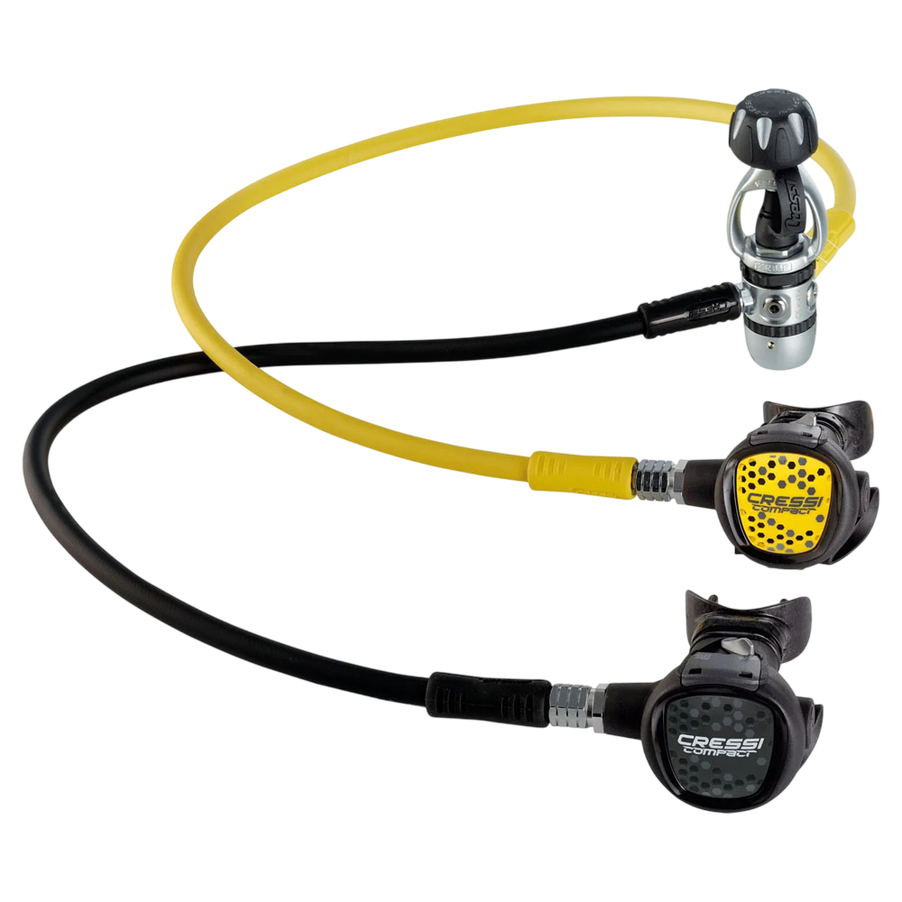

Threaded Connector (Dişli Bağlantı): DIN regülatörün ucunda bulunan ve tüp vanasının içine vidalanan erkek dişli kısımdır.
Mühendislik notu: Yükü vidalara bindirdiği için kelepçe sistemine göre çok daha yüksek basınçlara dayanabilir.
Captured O-Ring (Hapsolmuş O-Ring): INT sistemlerde o-ring tüpün üzerindeyken, DIN sistemde o-ring regülatörün ucundadır (dişlilerin bitiminde).
İşlevi: Regülatörü vidaladığınızda o-ring tüpün içinde hapsolur. Bu sayede yüksek basınç altında o-ring'in dışarı fırlama (extrusion) riski neredeyse sıfırdır.
Handwheel (Çevirme Tekeri): Regülatörü tüpe vidalamak için kullanılan, genellikle siyah plastik veya metal tutamaçtır.
Basınç Standartları (Bar)
DIN regülatörler basınç dayanımına göre diş sayısı ile ayrılır:
200 Bar DIN: Daha kısa diş yapısına sahiptir (Genellikle 5 diş).
300 Bar DIN: Daha uzun diş yapısına sahiptir (Genellikle 7 diş). 300 barlık tüpler sadece bu regülatörlerle kullanılabilir.

Yoke (INT) Bağlantı Terimleri ve Yapısı
1. Temel Parçalar
Yoke / A-Clamp (Boyunduruk/Kelepçe): Regülatörün birinci kademesine bağlı olan, "U" veya ters "D" şeklindeki metal çerçevedir. Tüp vanasının tepesine şapka gibi geçer.
Yoke Screw (Sıkıştırma Vidası): Kelepçenin arkasında bulunan, genellikle büyük siyah plastik başlı vidadır. Bunu elle çevirerek regülatörü tüpün hava çıkışına bastırırsınız.
Face Seal (Yüzey Contası): DIN sistemin aksine, bu sistemde O-Ring regülatörde değil, tüpün üzerinde bulunur. Regülatörün düz metal yüzeyi, tüpün üzerindeki bu lastik O-ring'e öpüşür (baskı yapar) ve sızdırmazlık sağlanır.
Dust Cap (Toz Kapağı): Regülatör tüpten çıkarıldığında hava girişini kapatmak için kullanılan plastik kapaktır. Yoke sistemlerde hava girişi çok açıkta olduğu için bu kapağı takmadan regülatörü yıkamak, birinci kademeye su kaçmasına ve içten paslanmaya neden olur (Buna dikkat!).
2. Basınç Sınırı
Maksimum 232 Bar: Yoke sistemler, yapısal olarak DIN kadar yüksek basınca dayanamaz. Genellikle maksimum 232 bar (yaklaşık 3300 psi) basınçla sınırlandırılmıştır. Daha yüksek basınçta O-ring'in patlama riski oluşur (O-ring extrusion).